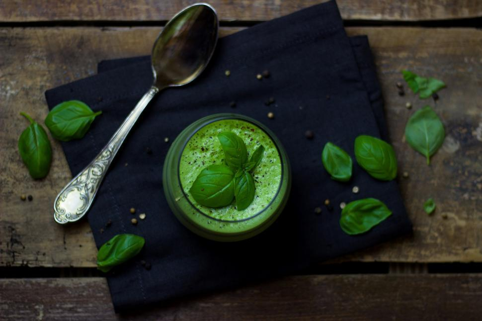

Spinach Soup

Description
Even Pop'Eye would devour this hearty staple!
Ingredients
For this recipe you will need the following:
- One package of ready-made spinach soup from the freezer
- One bag of fresh spinach
Steps
To succeed in preparing this dish follow this protocol:
- Put the frozen soup block in a pot and melt it on the stove with medium heat
- When melted completely, add in the fresh spinach while leaving out a few leaves for garnishing
- Blend everything in the pot with a hand blender until a silky smooth texture has been reached
- Pour soup in a bowl and place the extra spinach leaves tidyly on top, and serve
Return Home